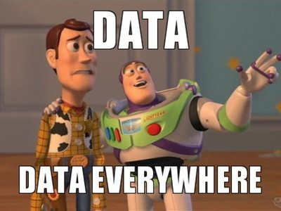
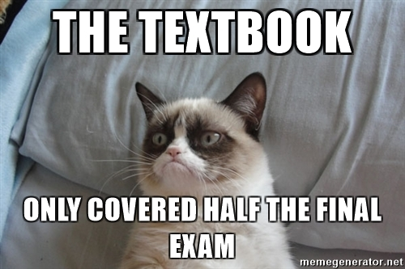

About CSCI 8360
Overview

This course aims to provide students with real-world data science experience. Students form teams, design data science pipelines from the ground-up, and compete to achieve the highest validation accuracy on a hidden test set.
Prerequisites
Machine learning, statistics, linear algebra, and software engineering knowledge are essential. Courses that would satisfy these prerequisites include:
Grading
tl;dr: Everyone is getting an A in the class, provided you don't ghost your teammates.
Ok, I guess that's not entirely true. COVID-19 has wreaked havoc on every aspect of our lives, and while education is absolutely the silver bullet for society's ails, being made to choose between education and life is farcical. So here's how grading this semester is going to work:
I'm not assigning number or letter grades to projects. If you show up on occasion to lecture, and you stay in regular communication with your teammates, then you get an A in the class. This course has traditionally be a LOT of work, but under the circumstances I don't want everyone stressing about their grades.
So that's it: show up, work hard, get an A. Disappear halfway through the semester, force your team to work without you, and you get an F. Really nothing in between.
Projects
There will be 3 team projects. Teams will be assigned randomly. Each project will be evaluated on both "theory" and "engineering" components.
- The baseline theory grade will entail implementing the suggested strategy in each project handout. This will usually be a simple algorithm that, if correctly implemented, will confer a reasonable test performance. It will also entail explaining how the algorithm works within the GitHub repo wiki.
- The baseline engineering grade will entail i) well-designed, modular code, ii) good documentation (in the code, in a README file, and on the GitHub wiki), and iii) effective team dynamics (division of labor in a CONTRIBUTORS file, good use of git commit comments, use of GitHub issue tracker).
Examples of going "above and beyond" include, but are not limited to i) implementing a sufficiently different algorithm (cite the paper), ii) obtaining outstanding test performance, iii) using continuous integration tools, iv) designing unit tests, v) a permissive open source license (in a LICENSE file), vi) a project website, vii) using linters to adhere to style standards, viii) creating and successfully hitting milestones in the issue tracker, ix) packaging your project for distribution (e.g. through pip or conda-forge), or x) providing outstanding documentation (e.g. usage examples, install instructions, a "quickstart" guide, comparison to other similar methods, etc).
There will also be an introductory "Project 0" that aims to familiarize students with the technical infrastructure of the course; this is required but will not be graded.
As stated in the previous section, projects will not be graded. However, they will still receive evaluations. What's the distinction?
In addition to each project deliverable, teams will also be required to peer evaluate each other's deliverables (don't worry, evaluation checklists will be provided that you can fill out). Each team will read over the other team's theory, repo (code + docs + tickets + wiki + README + LICENSE + unit tests + whatever else they provide!), and provide feedback on where they did well and where (and how) they can improve.
Finally, there will be lightning talks after each project. Each team will be given 5 minutes to give a talk / presentation / demo on their submission. I strongly encourage you to focus on your work, rather than the problem (since everyone's problem is going to be the same!). What did you try? What worked? What didn't? Why? What would you do differently next time?
Attendance
This is only relevant in the COVID-19 world.
All lectures and office hours for January and February will be virtual, conducted on Discord (see below). Lectures will also be recorded and posted on the course website for later asynchronous viewing. In March and April, in-person instruction will be on an ad-hoc basis as safety considerations permit.
In general, I don't care whether you attend lecture/office hours or not. I try to make lectures helpful and engaging, but if you need (or want) to be elsewhere, that's perfectly fine. Don't ask permission if you can skip class; instead, just tell me that you intend to skip so I don't worry about you. You're all adults!
Materials

GitHub
All course materials will be posted here, and all project repositories should be created and maintained here (whether they are private or public is up to you, but they should be part of the course's GitHub organization account). You can access the organization account through this link:
The specific repository for the Spring 2021 course materials is located here.
AutoLab
This is where you submit the output of your code for each project. You can access it via the link:
Remember: if you have problems accessing AutoLab, check that you're either on UGA's campus network or are connected to it via VPN. If neither of these are true, you can check out EITS' instructions for getting set up with VPN. If one of them IS true, let me know and we'll see about sorting it out.
Discord
This is where I make will make critical course announcements, so please ensure you are subscribed.
This is the primary point of interaction for asking for and offering help. I will answer questions when I can, but also I encourage everyone to help each other out, too!
Discord has apps for both Android and iOS, so you are welcome to download them if you want! You are also more than welcome to access Discord exclusively via the web. I would encourage you to check Discord at least once every 24 hours so you don't miss any critical announcements.
I also get inundated with emails on a daily basis, so using Discord to ask questions effectively acts as a filter: I'll most likely respond to a Slack question more quickly than I would by email.
If you are not in the Discord server, contact me via email to receive an invite link.
Policies

Projects are due by 11:59:59pm on the noted date; after that time, AutoLab will no longer accept submissions. Furthermore, no commits to GitHub repositories after the stated time will be considered when evaluating.
If you run into problems with your teammates, you first need to work with them and determine a course of action that is beneficial for everyone. If you and your teammates are still unable to reach a consensus, I am happy to help. But the bottom line is: your entire team sinks or swims together. There are no individual grades on the projects, so work with each other, not against one another.
The presence or absence of any form of help or collaboration, whether given or received, must be explicitly stated and disclosed in full by all involved, on the first page of their assignment ("I did not give or receive any help on this assignment" or "I helped [person] with [specific task]."). Collaboration without full disclosure will be handled severely; except in usual extenuating circumstances, my policy is to fail the student(s) for the entire course.
The simple version is: don't copy code or even previous solutions. Given the nature of this course and the need for ground-truth data on the verification end, chances are high you can find similar projects in the wild. Resist that urge; it will be obvious, and we'll have to have an awkward conversation that won't end well.
DO NOT COPY CODE. Don't do it.
COVID-19 Information
Face Coverings
As a reminder, the University of Georgia--along with all University System of Georgia (USG) institutions--requires all faculty, staff, students, and visitors to wear an appropriate face covering while inside campus facilities/buildings where six feet social distancing may not always be possible. Anyone not using a face covering when required will be asked to wear one or must leave the area. Reasonable accommodations may be made for those who are unable to wear a face covering for documented health reasons. Students seeking an accommodation related to face coverings should contact Disability Services at https://drc.uga.edu/.
DawgCheck
Please perform a quick symptom check each weekday on DawgCheck--on the UGA app or website--whether you feel sick or not. It will help health providers monitor the health situation on campus: https://dawgcheck.uga.edu/.
What do I do if I have symptoms?
Students showing symptoms should self-isolate and schedule an appointment with the University Health Center by calling 706-542-1162 (Monday-Friday, 8 a.m.-5 p.m.). Please DO NOT walk-in. For emergencies and after-hours care, see https://www.uhs.uga.edu/info/emergencies.
What do I do if I test positive?
Any student with a positive COVID-19 test is required to report the test in DawgCheck and should self-isolate immediately. Students should not attend classes in-person until the isolation period is completed. Once you report the positive test through DawgCheck, UGA Student Care and Outreach will follow up with you.
What do I do if I am notified that I have been exposed?
Effective Jan. 4, 2021, students who learn they have been directly exposed to COVID-19 but are not showing symptoms should self-quarantine for 10 days (consistent with updated Department of Public Health (DPH) and Centers for Disease Control and Prevention (CDC) guidelines). Those quarantining for 10 days must have been symptom-free throughout the monitoring period. Please correspond with your instructor via email, with a cc: to Student Care & Outreach at sco@uga.edu, to coordinate continuing your coursework while self-quarantined.
We strongly encourage students to voluntarily take a COVID-19 test within 48 hours of the end of the 10-day quarantine period (test to be administered between days 8 and 10). Students may obtain these tests at Legion Field (https://clia.vetview.vet.uga.edu/) or at the University Health Center by calling 706-542-1162 (Monday-Friday, 8 a.m.-5 p.m.). Please DO NOT walk-in the University Health Center without an appointment. For emergencies and after-hours care, see https://www.uhs.uga.edu/info/emergencies .
If the test is negative, the individual may return to campus, but MUST continue to closely monitor for any new COVID-19 symptoms through 14 days. DawgCheck is the best method for monitoring these symptoms. If new symptoms occur, the individual must not come to campus and must seek further testing/evaluation.
If the test is positive at the end of the 10-day period, the individual must begin a 10-day isolation period from the date of the test.
How do I participate in surveillance testing if I have NO symptoms?
We strongly encourage you to take advantage of the expanded surveillance testing that is being offered from January 4 – 22: up to 1,500 free tests per day at Legion Field and pop-up locations. Testing at Legion Field can be scheduled at https://clia.vetview.vet.uga.edu/. Walk-up appointments can usually be accommodated at Legion Field, and pop-up saliva testing does not require pre-registration. For planning purposes, precise sites and schedules for the pop-up clinics are published on the UHC’s website and its social media as they are secured: https://www.uhs.uga.edu/healthtopics/covid-surveillance-testing.
Contact
If you need to reach me, there are multiple ways:

- The 8360 Discord server
- Office: Boyd GSRC, Room 638A.
- Email: squinn@cs.uga.edu
- Phone: 2-4661